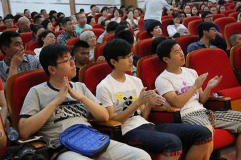

青岛大学问答
『2014年6月21日』
（一）问：在科学时代，为什么还有人陷入迷信？
答：迷信是对一个事物盲目、迷惘的信心。
在这个时代，存在迷信的现象不足为怪。按照佛教的观点，迷信源于无明，即不具备智慧。那么缺乏智慧之人，不必说在一般世间人中，即便科学工作者中也不乏其人，比如并不明白科学的真实内涵，却一味崇信科学，就已经处于迷信的状态。
西方的一些名人，像尼采和弗洛伊德，都承认自己早年迷信过。他们所谓的“迷信”并不是说信仰宗教就成了迷信，而是指自己在人生观上曾有过迷茫的信心。当然，也有人对宗教的信任是盲目的，这也是一种迷信，不过个别人的这种状态并不代表这个宗教的教义成了迷信。
儒教、道教和佛教，是中国的三大主流宗教。大家如果去认真了解，就会知道它们并非迷信，只不过后人有时对其教义未能真正理解，或者理解有所偏差，由此产生的一些民间行为确实属于迷信。
归根结底，迷信与否跟人的智慧密切相关——当一个人的智慧尚未达到一定高度时，很多行为都会带有迷信的成分。所以，即便在科学时代，迷信的现象也在所难免，而且不仅普通人群中有，高层次的人群中也存在。
（二）问：在如今的社会，某些邪教为什么还能蒙蔽人？
答：邪与正，在不同场合有不同定义，在有些场合被认定为邪教，换个场合也许并非如此。
我认为“邪教”是指冒用宗教等名义蛊惑人心而对人类的身体和心灵造成损害的组织。如果对人的生命、生活不但无害反而有利，乃至对全人类都有巨大利益，这样的组织就不属于邪教。
虽然对于邪教，每个人的认知有所不同，但是有的认知不一定符合事实，比如因为不信仰某个宗教，就把它判为邪教。
因此，有时可能先要把相关概念界定清楚，再做评判。
（三）问：您曾说每个人都应具有正信，尤其年轻人。那么在佛教里，除了前生后世，还有什么是年轻人特别需要信仰的呢？
答：我觉得除了对前后世的信心，年轻人还需要树立善恶因果的信念。这两种正信，不仅对年轻人，对所有人都非常重要。
首先，要知道前后世是真实存在的。
在座很多人因为成长环境的影响，可能对前后世心存怀疑，甚至觉得难以置信，而认为人跟一块石头、一截木头没有差别，一旦死掉就灰飞烟灭。实际上这种观念是错误的。
我以前翻译过一部论典《前世今生论》，现在出版时叫《生命的真相》，书中对于前后世的真实不虚，一方面从科学角度进行论证，另一方面运用佛教逻辑加以阐述，也可以说从哲学角度进行了证明。如果能阅读这本书，有关前后世的很多疑惑都会得以遣除。
如果后世不存在，那么大家每天寻欢作乐，甚至无恶不作，这样度过一生也没有大碍，但如果后世真的存在，而我们又没有为之做丝毫准备，那么后果也可想而知——必定陷入非常悲惨的境地。
其次，要明白善恶因果的规律。
在藏地，佛法非常兴盛，人人都有因果正见，特别害怕因为造恶而受到报应，不论现世报还是后世报，对此都心怀畏惧。可是大城市的很多人却截然不同，丝毫没有因果观念，所作所为不考虑后世，只要今生快乐就行。这其实很可怕。
为什么如今的社会中，各种恶性犯罪屡见不鲜？就是很多人没有因果正信所致。如果一个人深信因果，自然会在心里想“一旦造下恶业，将来一定难逃苦果，那时就太可怜了”，由此会对自己的行为有所约束；而如果不信因果，就会为所欲为，最终发展到违法犯罪的地步。
唐代时，中国大约百分之九十的人相信前生后世、善恶因果，然而随着历史的变迁，这些见解在很多人的心中变得模糊了，甚至有些年轻人以断定的口吻说：“我才不信那一套呢！”当然，你如果真的有大智慧可以证实自己的观点倒是可以，但是你的智慧也很有限，连自己的高考都难以把握，那要否定释迦牟尼佛的观点，可能非常困难。因此我也是给有些人敲个警钟吧，还是要审视一下自己的见解。
实际上，一个人有了因果正信，就有了道德的底线和行为的约束，是非常好的。而如果没有因果观念，那么一旦具有能力时，也许就会做出对他人、对社会有害之事。
（四）问：我最近看到一个新闻说，某大学的一个女生遭到强暴，学校于是给与她保研的资格，作为一种救助。但是我觉得，对于她个人，遭遇这样的灾难，如何度过心理难关才最重要，是这样吗？
答：我前些天去美国哈佛大学，那里有一位已经授课二十几年的女教授，她也是学藏传佛教的，我特意去听了她的课。当时她正在讲藏传佛教中康卓·益西措嘉的故事，其中有这么一段内容：益西措嘉曾遭人非礼，甚至强暴，但是这并没有让她的人生受到创伤，她后来更加精进地修行，价值观也作了调整和改变，最终成就了辉煌的人生。
讲完这段内容，那位女教授询问在场的学生：“如果这种遭遇发生在这个时代，受害者会怎么对待？”很多男生和女生纷纷发表了看法，也叙述了有些学校里发生的相关的事。
我想从传统观念或伦理道德而言，个别女生的这种遭遇，对她个人而言，是一种灾难，所以对她进行心理帮助和疏导，确实比较重要。
（五）问：学校教育是不是应该鼓励学生大胆尝试、不怕犯错？
答：这个我很认可，现在很多小学里也要求学生积极发言、勇敢参与，在演讲等活动中培养各种能力。
人生其实是一个不断应对问题的过程，所以很有必要运用种种方法，将心中的潜能开发出来。其实如果善于借助方便来锻炼心灵，每个人都可以迸发出一些前所未有的智慧与能力。
（六）问：迷信在这个时代也是存在的，您能不能再举例说明一下？
答：在这个时代，迷信的现象并不少见，大家如果留心观察就会发现这一点。比如曾经有个领导要给群众介绍农产品转基因的知识，其实他自己都不明白什么是转基因，也不明白什么是科学，但是却在群众中大肆宣扬：“你们一定要相信科学，不要迷信啊。”像这样自己尚且一无所知，却还口口声声让别人相信，就是迷信的行为。
如今虽然科学技术迅猛发展，但是如果一味盲信外在的科技，而把内在的心灵抛之不顾，把珍贵的传统文化弃若敝履，那么这种观念指导下的一切行为，很可能会落入迷信中。
（七）问：我是青岛大学心理学院的一名老师。人们在遭遇人祸——他人的伤害时，心中往往难以抑制怨恨之心，请问该如何对待人祸？
答：人祸有很多种情形，不仅是来自怨敌的伤害，包括家庭成员之间的热战、冷战，以及亲戚朋友之间的怨恨不满，都属于人祸。这种灾难给人造成的心灵创伤，可能很长时间都难以愈合。
不过我总觉得，按照大乘佛教的精神，别人之所以伤害你，实际上都有背后的因缘——你前世损害过他。世间中也常说“我前世欠了你”，这句话其实有很深的哲学内涵。
所以，面对人祸，如果还可以改变，就努力去改变，如果已经无法挽回，那么最好是调整自己的心态，尽量不怨恨对方。实际上如果能调整心态，就等于改变了这件事本身，可以起到这种效果。
《弟子规》中也讲：“恩欲报，怨欲忘。”别人对自己有恩惠，应时时想着“滴水之恩，涌泉相报”，尽量报答对方的恩德；别人对自己有伤害，应当尽快忘记，不要心怀怨恨。
不过有些人好像总是对别人的伤害怀恨在心，久久难以释怀，甚至伺机报复。这种心态应该改正。
当然，起初改起来也许有困难，但如果能慢慢思维其错误之处——不相合于高尚的人格、不符合因果的轨则，那么到了一定时候，内心就会得以转化。
（八）问：有时我会突然冒出很强烈的孤独感，该如何消除这种感觉？
答：如今的世界虽然信息非常发达，人们可以通过电话、微信、QQ等多种方式很方便地联络他人，但实际上家人、朋友之间的交流少之又少，各自都在忙自己的事，由此就导致很多人常常感觉孤独。
昨天在飞机上，坐在我旁边的两个人告诉我他们俩关系很好很好，但说完这句话后，他们就各自抱着手机发微信，从始至终再没有任何交流。我当时就想：现在人与人的确越来越疏离了，难怪会有人患上孤独症。
其实孤独感来自心灵，因此即便通讯录里的名单很长很长，也无法抵挡内心的这种感觉。
不过从另一个角度看，感到孤独也是正常现象。佛教的《无量寿经》中讲：“人在世间爱欲之中，独生独死，独去独来。”人来到这个世界，是独自一个人来的，最后离开时，也是独自一个人而去，不必说眷属、财富，连身体都无法带走。所以从这个层面而言，每个人都是孤独的。
虽然是这样，我们还是可以通过不断填充心灵来消除孤独的感觉。如何填充呢？拥有信仰是一种很好的方法，因为一旦有了信仰，心灵就有了依托，孤独感也会自然消失。
我认识的很多人，他们以前没有信仰时，觉得生活索然无味、未来虚无缥缈，任何一件小事都可能让他们倍感孤独；后来有了信仰，在面对很多问题时知道权衡前因后果，精神上有了依靠。
而且有信仰的人，不论年轻人还是老年人，不但不感到孤独，甚至很喜欢独处——愿意一个人安静地念经、看书、参禅。比如有些学佛的老年人就不希望子女来打扰，会跟子女说：“我要修行，你们不要来看我。”
所以，要去除孤独感，信仰有不容忽视的力量。
（九）问：我是青岛大学心理学院2012级的学生。我身边有许多人遇到心理问题时，不会去寻求心理学的帮助，而是选择相信一些神秘的方式，请问如何让他们接受心理学？
答：在如今的社会环境中，有些人去寻找解决心灵困惑的其他方式，这其实无可厚非，因为仅仅依靠大学里某些专业课程知识，要满足一切的心灵需求，是非常困难的。
那么在这种形势下，作为心理学专业的学生，除了学习专业课程，还需要了解一下艺术、宗教等知识，只不过在学习这些知识时，不能过于极端，比如学业都没完成，却把精力全部花在这上面，就不太合理。
我个人认为，大学生一方面应该认真学习专业知识，如果有可能就继续攻读硕士、博士学位，同时对于其他领域的知识，也要保持一颗求知心；另一方面，如果有机会可以去一些西方国家、东南亚国家看看，了解一下那里比较开放、轻松的教育模式、思维方式，更重要的，还可以去非洲、印度，以及藏地等地方，在那里的有些地区，人们的生活比较困乏，教育条件也很落后。
现在有些大学生觉得自己读完了大学，就十分傲慢，“我是某某大学毕业的”。其实在大学里，所学的知识非常有限，没有接触的知识多之又多，所以大学生一方面应该探求更高的知识，另一方面也可以去贫穷落后的地方走一走、看一看，这样会自然明白许多人生哲理。
总之，大家要知道，仅依靠单一的专业知识，难以应对所有的问题。
在如今的中国，精通专业知识的大学生比比皆是，但是他们走上工作岗位时，真正运用这些知识的机会少之又少。这一点跟西方很多地方完全不同。在西方个别国家，高校毕业生一旦投入工作，一辈子都在使用所学的专业知识；但是在我们这里，读师范的可能去搞建筑，读建筑的可能做了老师……各种混乱的情况都会出现。
所以在座的同学，不但要掌握好专业知识，还要希求更多、更高的学问，比如宗教里有关心灵调解的道理，就很有必要去了解。
如今为什么很多人都喜欢学《金刚经》，喜欢念《心经》？像《心经》，只有二百多个字，但是自古以来无数人对它钟情有加，它里面究竟蕴含了什么奥秘？这些值得大家思考。
很多大学生可能因为思想不够成熟，加上自己的老师观念较为保守——仅仅提倡学习专业知识，由此导致学生的思维也难以开通。现在极个别老师，虽然专业知识很丰富，但是对其他知识知之甚少，甚至内心排斥。这是不太合理的。因为对于任何一种知识，如果你去仔细学习，发现它是错误的，那么有权否定它，摈弃它；但是如果你对它一无所知，最好既不赞叹也不诽谤，因为你并不懂它，只有你懂的时候才有资格评价。
总而言之，希望在座的同学在掌握专业知识的同时，拓展自己的知识面，不断探索各种对自他有益的真理。
（十）问：我是机电工程学院的一名学生。关于因果，我有一个困惑，如果我做了一件不好的事，一段时间后又遭遇了一件不幸的事，这两者属于恶因恶果吗？
答：因果非常甚深微细，像我这样的人，不要说对你的因果，连我自己一生中各种行为的因果确实也并不清楚。
但是我可以用佛教的道理来推断：你所遭遇的不幸，可能是你今生做的不好的事带来的，也可能是你前世或再前世种下的不好的因成熟了。不管怎样，行善或造恶就如同播下种子一样，将来会成熟相应的果报。
在世间，农民在田里播下庄稼的种子，这些种子有的春天发芽，有的冬天萌发，有的很多年后才破土而出；同样，我们的一切言语、行为以及心念，都会在心田里播下种子，果报成熟的时间可能在今生、来世或者更久远的未来，这取决于每个人心中的因缘。但是不论何时成熟，都一定遵循善有善报、恶有恶报的规律。
所以，究竟你前面的什么行为导致了后面的苦果，对我而言也是个问号，但是我相信这个苦果一定是由不善因导致的，而且这个因不一定是今世的，有可能是前世造下的。有些人对因果的理解仅仅局限于今世，这不太合理，应该贯穿到前世与后世来观察。
明白因果的道理，对每个人都非常重要，以此遇到问题时会减少很多迷茫，而且因果作为一种规律，任何人都无法逃脱，所以很有必要了解。
不过，因果的道理说出来容易，“善有善报、恶有恶报”，但要真的相信它，不但相信还付诸行动——对于善事，尽量去行持；对于恶事，不论别人督促与否，都尽量远离，行为中有一种决定性，就非常难能可贵了。所以，在这方面，每个人都要不断努力。
（十一）问：我是心理学院2013级的学生。您说佛教有很多调心方法，那么运用这些方法能达到什么效果？想学习这些方法，可以阅读哪些书籍？
答：佛教里确实有很多调心方法，比如禅修，现代人的内心往往浮躁、散乱，这样做事难以成功，如果禅修，就可以让心保持淡定、寂静，再比如守持正知正念、修持胜观，都是很好的调心法。
运用这些方法不断调整内心，最后会达到“堪能”的状态——心非常自在，想专注某个对境，就能自然专注；如果不愿专注，则可以起心动念。如果达到这种境界，做任何事都会非常高效。
有关这些调心法的书籍，是非常多的，比如《入菩萨行论》《大乘阿毗达磨论》《瑜伽师地论》，以及藏传佛教中的《智者入门论》等等。《入菩萨行论》第八品讲述了很多寂止方面的知识，《大乘阿毗达磨论》讲到人的51种心所如何区分……这些书籍都值得阅读。不过这些书籍有的有汉文版本，有的尚未译成汉文。还有一部论典叫《学集论》，有汉文版本，也非常殊胜。
如果研读这些论著，就会知道佛教对人心的观察有多么细致入微，比如心分为哪些类型、每种类型的体相与作用，以及善心、恶心跟哪些心相应……都有详细分析。
我以前对心理学很感兴趣，诸如形而上学、弗洛伊德学说，还有荣格心理学，对这些都有所了解，后来我把心理学与佛教作了对比，发现二者有不少共通之处，因此非常希望以后高等院校与佛学院之间能有更多的交流与沟通。
在西方很多地方，大学教授与宗教人士每年都共同举办一些活动，进行心理科学方面的对话。前两天在清华大学，我与一位教授也作过一个交流：他站在科学角度，我站在佛学角度，就一些热门话题进行探讨。
在这种跨学科的对话中，佛教徒提供佛学知识，科学工作者提供科学依据，互相切磋、互为补充，是非常有意义的。
（十二）问：您说到能将佛法引入高校是很好的。如果是这样，该如何设置教学方式？
答：高等院校课程中，如果能引入佛教的内容，必定可以利益很多年轻人。对于其他宗教以及心理学，我也有所了解，那么比较而言佛教有一个突出特点，就是运用众多逻辑推理与因明辩论的方式来抉择心灵的奥秘，而这一点知识分子会比较容易接受。
至于教学方式，一方面可以循序渐进逐步推进，像学习专业知识一样；另一方面，可以着重推广一些传统文化的基础课程，诸如《弟子规》《千字文》等，虽然这些著作的内容比较简单，但是大学教育将之作为基础来重视，也非常好，还有佛教的《善生经》《佛说善恶因果经》，以及道家的《道德经》，也非常值得学习。
《善生经》《道德经》等教典乍听起来，似乎很玄妙、很神秘，有些学生也许觉得：“学这些有什么意义呢？”实际上这些书籍所讲解的道理非常甚深，诸如天人合一、因缘果报等等，这对高校课程是巨大的弥补。
年轻人不应满足于仅仅懂一点技术知识，因为人生是纷繁复杂的，仅仅用这些来应对，必定会捉襟见肘，应该同时有深厚的人文底蕴。当然，如果仅仅通晓人文知识，而对现代科技一窍不通，那也如同缺少了一只翅膀，无法飞向21世纪的高空。所以，人文与科技两方面的知识都掌握于心，才比较圆满。
（十三）问：您说在美国、德国等地的学校里已经开设了心灵健康课，而在中国暂时还没有这种条件，作为大学生，有办法改变这一状况吗？
答：其实国内很多大学也有这类课程，比如清华、北大、复旦以及浙大等学校都设有禅修课、心理认知课。从各方面的情况来看，未来会有更多大学设立这类课程。
其实，真正的宗教信仰，在美国等地有些学校的课程里也不允许出现，但是心灵教育课是可以有的。
我想不同学校可以有不同的特色，不过这不是很主要的，最关键的是大学生自己要有开放的心态，不能太保守，如果只能接受自己的专业，对其他知识一概否定或者认定为迷信，这就不合理。比如佛教，如果真的是迷信，为什么能够历经两千五百多年的漫长岁月，一直流传至今？而且在如今依然让那么多人崇奉、信赖，为之折服？
所以作为大学生，在完成专业学习之外，还应当多去涉猎各类知识，诸如人类学、宗教学，尤其儒家、道家与佛家的内容。大学期间读万卷书，大学毕业后行万里路，能这样是比较完美的。
其实不仅大学生需要广闻博学，我们佛教徒也不例外。我所在的佛学院虽然开设了专业佛法课，像因明、中观、戒律等，但有些法师不但学习这些课程，对于其他有助于人生以及弘法的知识，也会孜孜不倦地求取。
总之，人生中会遇到很多问题，而解决的方法也有种种不同，仅仅懂得书本知识是不足够的，还需明白一些富有奥秘的道理，所以应当以开放、包容的心态不断学习。
（十四）问：我是青岛大学心理学院的学生。汶川地震后，国家对汶川进行大力重建，使得那里焕然一新。这种变化可以消除受灾者的痛苦吗？
答：物质上的改善，会对灾难幸存者的痛苦有所缓解。但是大家都知道，失去亲人的痛苦通常很难用财物、房屋等弥补，这些物质与亲人的生命根本无法相提并论。因此，灾区的人们虽然有了新家园，但如果缺乏精神的依托，失去亲人的伤痛可能会永远留在内心深处。
一般一个地方发生灾难，四面八方的人都会给与物质援助，但我认为精神上的帮助才是根本之策。因为一个人只有心结解开了，心伤愈合了，想通了某件事，才可能获得新生，否则即便房子焕然一新，人心也不一定感觉幸福，就像世间有很多人不愁吃、不愁穿，但是却患上抑郁症、自闭症等等。
至于如何进行心理援助，我觉得主要是让遭遇灾难的人们明白世事无常的道理。无常是一种自然规律，随着时间的流逝，每个人都不可避免要面对各种无常，人生就是在上演一出出无常的戏。如果认清了这一点，无常降临时，就会多一分勇气与淡定。
其实遭遇灾难的人，很容易体会到“以前人在时，没有房子；现在房子有了，人却不在了”，此时就可以引导他们认识万法无常的真相，帮助他们勇敢地面对无常。

（十五）问：现在的社会比较提倡正能量的言行，心理学领域也流行积极心理学，但是佛教主张修行苦行、克制欲望，这是否与主流思想有所冲突呢？
答：佛教并没有要求人人都去苦行。
当今社会物质发展日新月异，这在佛教看来，也非常值得赞叹。但是在佛教的某些教义中，为了克制人们过度膨胀的欲望，仍会教导人修持苦行。这就好比教育孩子的过程中，有些父母不让孩子买名牌衣服、高档手机等奢侈品，而要求孩子刻苦学习，因为这个年龄如果不努力学习，长大后就不会有出息；同样地，在佛教《毗奈耶经》等个别小乘经典中，为了克制人们的重大贪欲，而提倡知足少欲、勤俭节约，乃至行持头陀行，这也是引导弟子修行的一种方便。
但是到了佛教的中层教法——大乘佛教中，更加倡导的就是利益众生，此时作为心怀利他的大乘菩萨，如果没有对财物的贪心，那么即使坐拥金山银山也是允许的。
所以，佛教有不同层次，就像心理学有种种分支一样，不能把佛教的教义狭隘化。
现在很多人对佛教的理解有所偏差，比如，认为和尚一定要待在深山老林里与世隔绝，不能出现在城市里。虽然个别出家人选择在山里闭关修行，但是很多佛经里也劝导出家人到城市里为众生说法施教。
还有些人对佛教经典望文生义，由此提出种种疑问：“佛教不是说‘色即是空、空即是色’吗？佛教不是看破一切吗？你为什么吃饭呢？你还没有看破吗？”“佛教不是讲空性吗？你为什么还要修行啊？”像这些，都是没有正确理解佛经所致。
总之，佛教的教义广博而深奥，并非一两句话就能代表全部，也并非依文解义就能够通达其中义理。
（十六）问：虽然知道有些行为不好，比如杀生，但是有时因为环境的原因，又不得不去做，请问该怎么办？
答：很多人毕竟还生活在世俗中，在这种情形下，有时可能是主动的，有时也许是被迫的，造下了一些恶业。这虽然难以避免，但还是尽量不要杀害众生，因为杀生的果报非常严重。
现在很多人认为，只要不杀人就可以，杀动物天经地义。尤其沿海城市的很多人，每天吃海鲜就像吃青菜一样，觉得稀松平常。这在佛教看来，是非常可怕的，不仅剥夺了其他众生的宝贵生命，也为自己埋下未来苦果的伏笔。如果你相信因果就知道，今天你吃这个众生，将来很可能变成这类众生被吃掉。
因此，我们要尽量爱护其他动物的生命，像爱护人的生命一样。如果实在迫不得已，也千万不能点杀，这非常重要。
很多人学佛之后回首过去，发现自己前半生像屠夫一样，杀害了不可计数的众生，双手沾满鲜血，现在想要忏悔这个罪业都非常困难。所以，最初就尽量远离杀生是很重要的。
主持人：
因为时间关系，我们的提问就到此为止了。今天下午佛学与心理学的对话中，在佛学中，我们看到了心理学的影子，在心理学中，我们也看到了佛学的影子。
比如上师提到生命无常，面对任何灾难或生活的磨难，要提高承受与接纳能力，而在心理学里也说要活在此时此地，要珍惜生命。上师讲我们要做智慧的人，将传统与现代相结合，将物质与精神相结合，心理学也倡导要做一个整合的人。诸如此类，佛学与心理学还有很多共通之处。
我相信佛学与心理学在这场对话中的和谐共鸣，给在座每位朋友都带来了人生的智慧，特别是对心理学工作者如何提升心理服务质量，提供了巨大的启发。让我们再次以热烈的掌声对上师表示感谢！